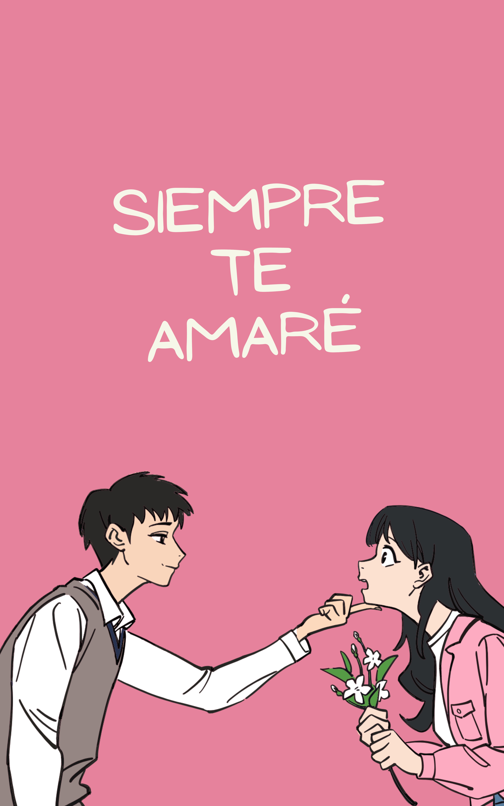

La historia de dos almas que se encontraron en el momento más inesperado. Aunque el destino intentó separarlos una y otra vez, su amor siempre prevaleció. Juntos enfrentaron los desafíos y superaron las pruebas que la vida les puso en el camino. En cada momento difícil, juraron estar allí el uno para el otro, sin importar qué. Siempre estaré contigo, susurraba él mientras ella cerraba los ojos y sonreía, sabiendo que aquel compromiso era inquebrantable.

Un amor eterno que empezó en la juventud, pero que jamás se extinguiría. Dos corazones unidos por la pasión y el cariño, prometidos a vivir una vida llena de felicidad. Aunque los años pasaran y las arrugas aparecieran, el sentimiento entre ellos nunca menguó. Siempre te amaré, murmuraba ella cada mañana mientras acariciaba su rostro cansado. El tiempo no podía borrar el amor que sentían el uno por el otro, porque su compromiso era amarse hasta el último suspiro.
Bajo el cálido sol del verano, sus caminos se cruzaron. Ella, una chica soñadora y llena de vida; él, un chico rebelde y aventurero. En aquel paraje paradisíaco, dieron rienda suelta a la pasión que los envolvía, sin pensar en el mañana. Sus caricias y sonrisas compartidas se convirtieron en recuerdos imborrables en sus corazones. Aunque el tiempo pasó y la distancia los separó, la historia de amor de verano siguió viva en sus mentes y corazones, recordándoles el amor y la felicidad que una vez compartieron.
Un amor sincero y desinteresado, juramentado para estar juntos en cada etapa de la vida. Él sabía que ella tenía miedos y heridas del pasado, pero él estaba dispuesto a sanarlas y protegerla de todo mal. Nunca te dejaré, lo prometo, le decía él mientras abrazaba fuertemente a su amada. En su mirada se encontraba la seguridad de que sus promesas jamás serían rotas, y en su corazón estaba grabada la lealtad y el amor eterno. Juntos enfrentaron los desafíos y construyeron un futuro sólido, recordándose mutuamente cada día que su amor era inquebrantable.